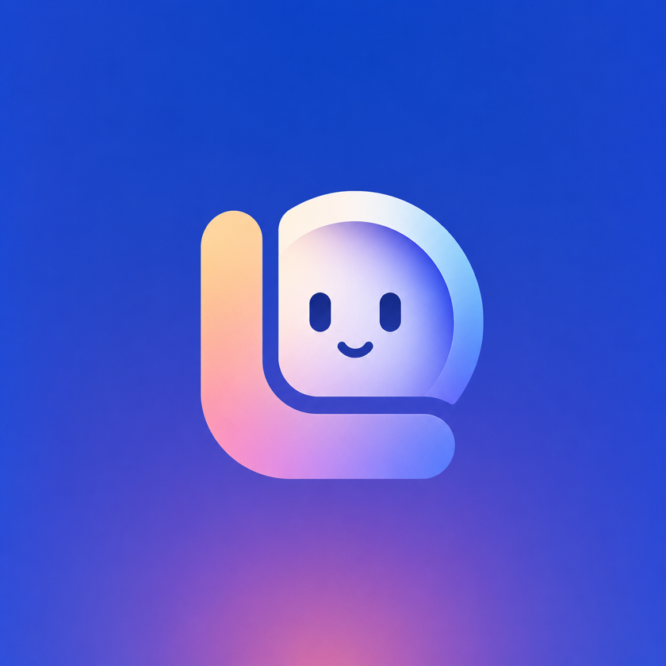
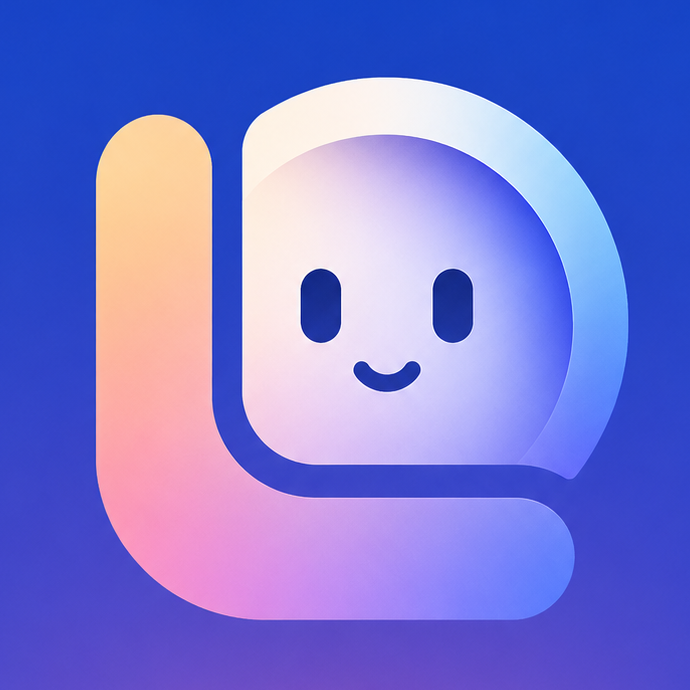

An AI project manager for creative teams. She reads each request on the team's Asana board and routes it to an owner. She started by proposing every call. Once trusted, she assigns on her own.
A build and execution through Technovation
The problem
Requests arrive from everywhere. Forms, DMs, hallway asks, the dreaded "quick favor." Someone has to read each one, figure out what it actually is, find the right owner, and set a deadline before any creative work can start. On a global marketing team, that triage job quietly eats hours every week and the person doing it is usually the same person the work is waiting on.
LOLA takes the reading and matching off that person's plate. She proved her calls were right before she was trusted to make them on her own.
The mark

The L is the lettermark and the frame at the same time. It carries the warm gradient and gives the face somewhere to sit. Nothing in the mark is decorative.
Shaped like a chat bubble because that is the honest form. You talk to her, she answers. The cool gradient belongs to output.
Nothing floats. The structure contains the personality, which is exactly how the product is built. The mark says the same thing the architecture does.
LOLA Blue is the environment. The glow rises from below, warm and ambient, signaling activity without alarm. The mark never sits on white by default.
The system
The palette is functional. Warm tones belong to anything LOLA does on her own. Cool tones appear after a person confirms her call. Cream marks the moments she steps back and asks for help. Color carries state across every surface, from the logo to a status chip in a task list.
Squared counters echo the chat-bubble geometry of the mark without imitating it.
Disappears on purpose. The personality stays in the mark and the voice.
When the system speaks verbatim, it speaks in mono. One rule that keeps her honest.
Status chips
LOLA read the request and routed it to an owner. The pulse marks a call a person has not reviewed yet.
A person reviewed the call and kept it. Cool tones appear once a human has looked.
A multi-format or unclear request. LOLA moves it to Pending Info for a person instead of guessing. Flat cream, no gradient.
Architecture
A request lands on the board
Someone adds a task to the team's Asana board. A webhook wakes LOLA. She checks the signature and reads the request. Unverified callers are turned away.
She routes it
If the request type is set, LOLA looks the owner up in a fixed table, no AI needed. If it is blank, Claude reads the text and infers the owner. Either way she cites her reasoning: matched: rule 2.1 (event collateral → design queue).
She checks the brief
Claude reads the routed request and flags a thin brief before work starts. If the request links to Drive files, LOLA checks that they open and asks the requester to share the ones that do not.
Unclear? She hands it up.
A multi-format campaign or an unclear request goes to the triage owner and moves to Pending Info. LOLA flags what was missing. Guessing is not in her permission set.
She acts, gated
In safety mode she comments her call and tags a human, writing nothing. In live mode she assigns the owner, sets the due date, and moves the card. Going live takes two switches, so it never happens by accident. A reviewed call turns cool.
Asana · Vercel · Anthropic API (Sonnet + Opus 4.8) · Google Drive · Node.js
How she grew
Phase 1 · Shipped
A task lands on the Asana board and LOLA reads it. If the request type is set, she looks the owner up in a fixed table. If it is blank, Claude infers the owner from the text. She cites the rule behind every call.
Phase 2 · Shipped
Claude reads each routed request and flags a thin brief. When a Google Drive account is connected, LOLA checks that linked files open, and asks the requester to share the ones that do not.
Phase 3 · Roadmap
Next she watches the work after she routes it. She notices tasks that stall before a deadline. She learns the rulebook from the calls a human overrides.
LOLA shipped in safety mode. She proposed every call and tagged a human, and wrote nothing to the board. Going live takes two separate switches, so no single deploy can hand her the keys by accident. She proved her routing for a week before anyone let her act on it. A kill switch stops her in one step. She never deletes data.
LOLA V1 · BUILT AND EXECUTED THROUGH TECHNOVATION · 2026